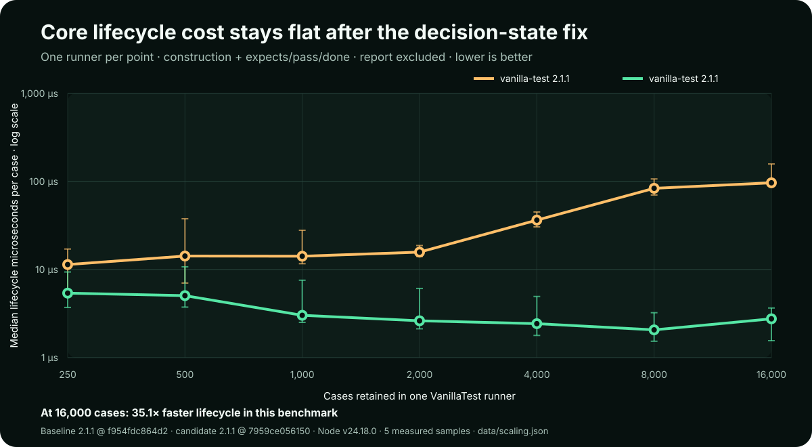
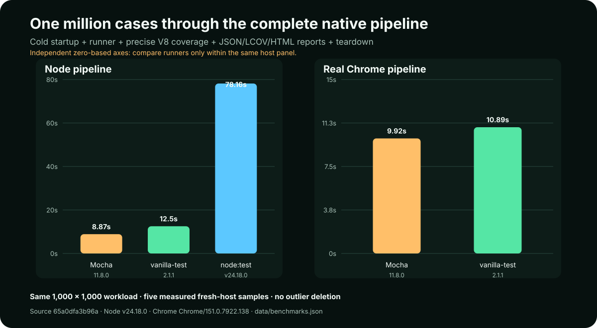

Published native-pipeline run
Loading signed-off benchmark data…
Algorithm boundary
Core lifecycle scaling
Loading signed-off scaling data…
Each point puts 250 through 16,000 uniquely named passing cases in one runner. Imports and report() are outside the timer; construction plus expects(), pass(), and done() are inside it. The exact 2.1.1 index.js is reconstructed from Git and uses the same installed dependencies as the candidate.

| Cases in one runner | 2.1.1 median | 2.1.2 median | 2.1.1 per case | 2.1.2 per case | Faster |
|---|---|---|---|---|---|
| Loading core-scaling samples… | |||||
Waiting for scaling provenance…
Complete host pipelines
One-million-case overview
Independent zero-based axes

Native Node only
Node pipeline
Fresh worker + test child per sample
| Runner | Cold wall | Full pipeline | Runner phase | Cold throughput | Peak sampled |
|---|---|---|---|---|---|
| Loading Node samples… | |||||
Real browser only
Google Chrome pipeline
Fresh isolated Chrome profile per sample
| Runner | Cold wall | Full pipeline | Runner phase | Cold throughput | Peak sampled |
|---|---|---|---|---|---|
| Loading browser samples… | |||||
Node peak is sampled process RSS; Chrome peak is sampled renderer JavaScript heap. Treat them as host-specific context, not a cross-runtime memory ranking.
Node and Chrome have different startup and host costs. They are independent native lanes, never numbers in one ranking.
What “end to end” means here
- Cold host.Start a fresh Node worker and test child, or a fresh isolated Google Chrome process.
- Real runner cases.Define and complete 1,000,000 uniquely named cases in 1,000 bounded suites. No raw loop is ranked as a competitor.
- Detailed result work.Materialize each framework's detailed passing report into a silent sink, so terminal spam is removed without deleting report cost.
- Native coverage.Collect untransformed V8 ranges from the identical shared workload in the selected host.
- Four files and teardown.Write test JSON, coverage JSON, LCOV, and standalone HTML; validate hashes and exact counts; then close the host.
Because coverage is enabled intentionally, these are complete pipeline measurements—not claims about isolated assertion nanoseconds. The same project-owned native V8 collector and deterministic HTML/LCOV/JSON reporter wrap every entrant, holding those phases constant while the runner changes. Runner, pipeline, and cold-wall boundaries remain separate in every raw sample.
Why these competitors qualify
node:test
Built into the exact recorded Node runtime, with suites, hooks, mocks, snapshots, reruns, reporters, and coverage.
Official capability referenceMocha
Pinned in the benchmark lockfile, with suites, hooks, async support, filtering, retries, ESM, browser execution, and reporters.
Official browser referenceLightweight loops and less capable micro-runners are excluded from the visible ranking. This prevents a flattering but mismatched comparison.
Inspect the exact benchmark code
The implementation stays available without filling the results page with source. Open any file in a focused native dialog, copy it, or follow its commit-pinned repository link.